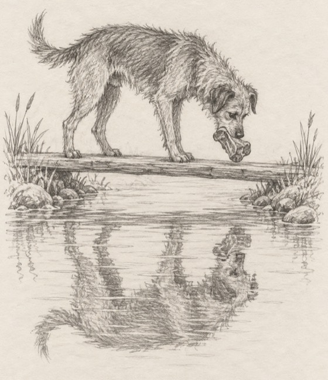

|
Have you ever loved who a man could be?
Not who he is. Who he could be. If work calmed down. If he called more. If he was finally ready.
Most of us have, at least once.
There’s an old fable that gets this exactly right. It’s one of Aesop’s. People have told it for about 2,000 years.
A dog had a piece of meat. He was carrying it home to eat in peace.
On the way, he had to cross a stream on a narrow plank.
As he crossed, he looked down. There in the water was another dog, with another piece of meat.
That piece looked twice as big.
He wanted that one too.
So he snapped at it.
And the moment he opened his mouth, his own meat fell out.
The stream carried it away. (In one old telling, a passing raven snatched it and gobbled it up. Not the dog’s best day.)
And the other dog? There never was one. It was his own reflection.
Moral of the story: don’t drop what’s real to grab at a reflection.

The old tellings say it’s about greed. In love, I think it’s hope.
The reflection is usually a man. Not the one in front of us. The one in our head.
Who he was in the first month. Who he’ll be when he’s ready.
And he always looks twice as big as the real thing.
So we let go of real things to reach for him. A night’s sleep. A Saturday with friends. Our peace.
No one right now? Then the reflection can be a future. “When I meet him, I’ll take that trip.” Meanwhile, our real life floats off down the stream.
Here’s my one rule.
Before you let go of something real, ask: is the other thing real too?
Say you’re about to turn down dinner with a friend, in case he calls tonight. The dinner is real. The call isn’t, yet. Keep the dinner.
And if the other thing is real? Then reach for it. This isn’t a rule about settling.
The hard part is telling them apart. That dog was sure he saw a real dog.
Two ways to use my rule.
Way one: on your own. Tonight, write down what he’s really done this month. Then what you’re hoping he’ll do one day. Read both lists, slowly. (No one right now? Write down what you’ve put off until “when I meet him.”)
Way two: with me. Skip the lists. Tell me about him: what’s real, and what you’re hoping for. Or tell me there’s no one, and what you’ve been waiting for. We’ll look at which is which, together.
Made the lists? Bring them. Didn’t? Come anyway.
Evelyn, help me tell what’s real from what I’m hoping for →
And if you’ve been hoping for a long time, please hear this.
Hoping doesn’t make you foolish. It’s what kept you kind. It’s why you gave him one more chance, and then another.
It’s just tiring, carrying a man who mostly lives in your head. Doing the talking for both of you, late at night.
You don’t have to sort it out on your own.
First time talking to me? The first 3 minutes are my treat.
The dog lost his dinner in a second. Waiting on a reflection takes longer. But those days don’t come back either.
Ask Evelyn what’s real →
— Evelyn
P.S. There never was a second dog. Just a picture in the water, looking twice as big. If someone looks bigger in your head than he does in your life, come and tell me about him. Start here.
|